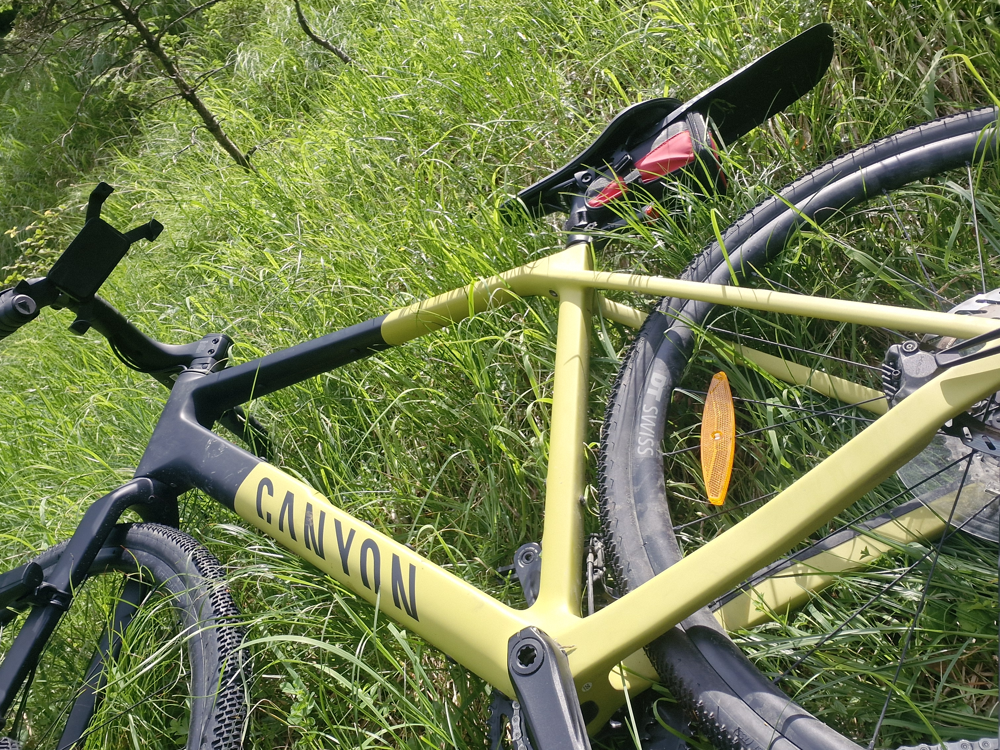
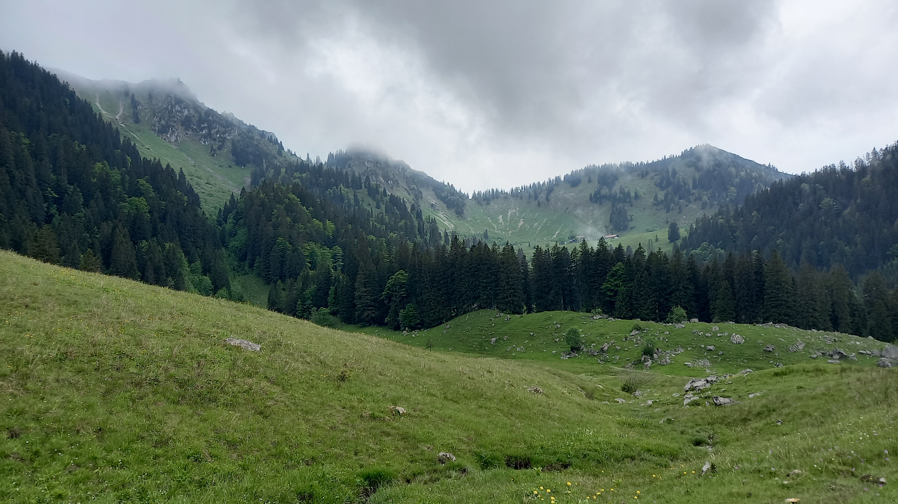
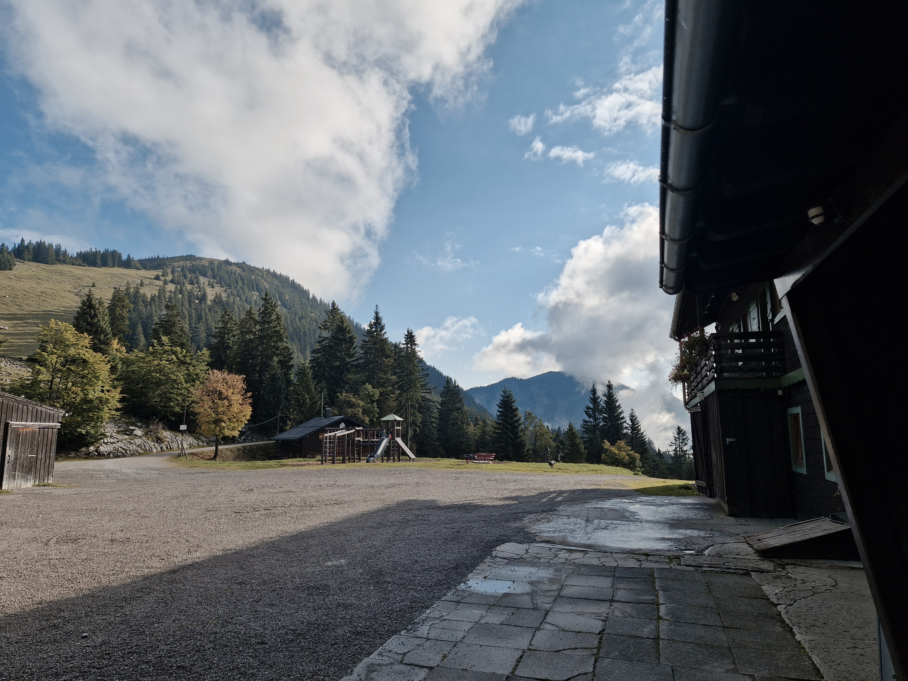
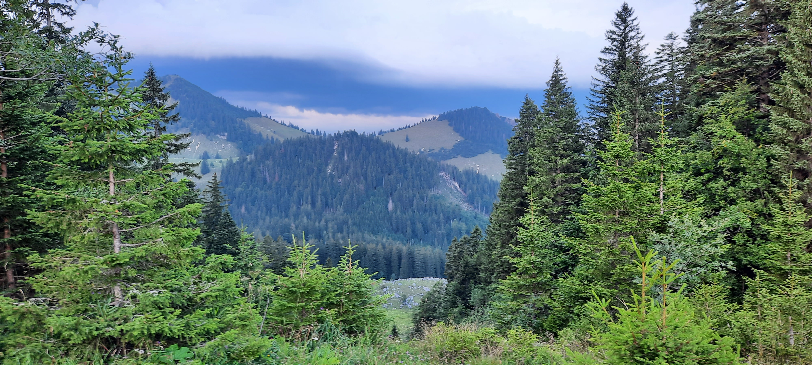
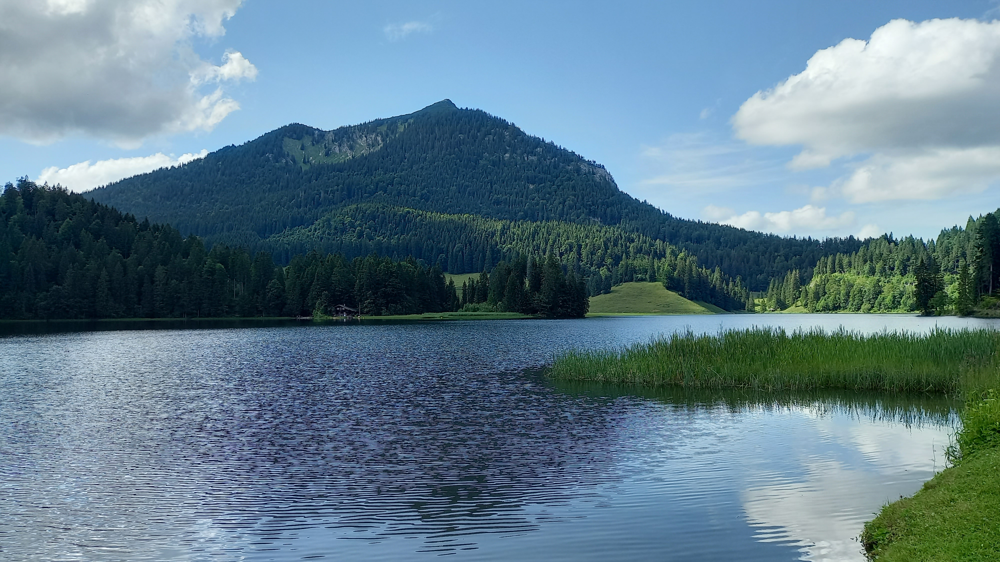
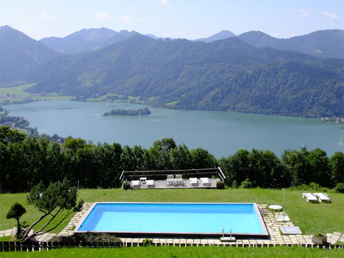

Gravel Biking im Mangfallgebirge
50 Gravel-Touren zwischen Schliersee, Tegernsee, Valepp und Mangfallgebirge – von flachen Talrunden bis zu epischen Bikepacking-Tagesetappen. Dazu das Setup fuer Reifen, Gepaeck und Navigation.
Das perfekte Gravel-Setup fuer die Alpen
Drei Dinge entscheiden im Mangfallgebirge darueber, ob eine Gravel-Tour Spass macht oder zum Kampf wird: die Reifen, das Gepaeck und die Navigation.

1. Die richtigen Reifen
Auf den Valepp-Forstwegen triffst du groben Kalkschotter, Wurzeln und lose Steinpassagen. Unsere Empfehlung: mindestens 40 mm Breite (besser 45-50 mm) mit grobem Profil und echten Schulter-Stollen. Tubeless reduziert Durchschlaege deutlich.
Gravel-Reifen bei Bergzeit ansehen
2. Bikepacking-Taschen
Fuer Mehrtagestouren setzen wir auf das Drei-Taschen-Setup: eine Arschrakete (Satteltasche) fuer Schlafsack und Kleidung, ein Framebag fuer Werkzeug und Proviant sowie eine Handlebar-Roll am Lenker.
Bikepacking-Ausruestung shoppen
3. Navigation & GPS
Im Mangfallgebirge hast du in den Taelern und auf vielen Forstwegen keinen Handyempfang. Ein dediziertes Wahoo oder Garmin mit Offline-Karten ist Pflicht. Route vorab als GPX laden.
GPS-Geraete ansehen50 Gravel-Touren in der Region
Von der flachen Talrunde bis zur epischen Bikepacking-Etappe – alle Touren starten rund um Schliersee, Tegernsee, Valepp und das Mangfallgebirge. Mit echten Start-/Zielpunkten (BRB-Bahnhoefe, Spitzingsattel, Josefsthal) und Routenverlauf.
Easy Gravel
Talboden, flacher Schotter und Uferwege – ideal fuer den Einstieg und fuer Genussfahrer.

Schliersee Seeumrundung
8 km · 20 hm · 0:45 Std.
Start/Ziel: Bahnhof Schliersee oder Parkplatz Vitalwelt
Verlauf: Über den Kurweg am Westufer, Südufer via Fischhausen, zurück über den Schotterweg am Ostufer (Rixner Alm).

Valepp Rollout (bis zur Klause)
20 km · 250 hm · 1:30 Std.
Start/Ziel: Parkplatz Kirche Neuhaus (Fischhausen)
Verlauf: Shuttle-Anstieg über die alte Spitzingstraße, am Spitzingsee-Ufer vorbei in die für Autos gesperrte, asphaltierte und feingeschotterte Valepp-Schlucht.

Weissachau Flussrunde
15 km · 100 hm · 1:15 Std.
Start/Ziel: Zentrum Rottach-Egern
Verlauf: Flacher, extrem feiner Schotter auf dem Weißachdamm Richtung Kreuth und durch den schattigen Auwald zurück.

Leitzachtal Panoramarunde
35 km · 300 hm · 2:30 Std.
Start/Ziel: Bahnhof Fischbachau
Verlauf: Über Elbach, Hundham und Wörnsmühl. Sanftes Auf und Ab auf Wirtschaftswegen mit Blick auf den Wendelstein.

Mangfall-Radweg Miesbach
25 km · 150 hm · 1:45 Std.
Start/Ziel: Bahnhof Miesbach
Verlauf: Dem Flusslauf der Mangfall folgend über Thalham bis Weyarn und auf der gegenüberliegenden Uferseite zurück.

Tegernsee Ufer-Trail
14 km · 120 hm · 1:10 Std.
Start/Ziel: Bahnhof Tegernsee
Verlauf: Am Ostufer entlang über Rottach-Egern und Bad Wiessee, zurück über den feinen Ufer-Schotterweg nach Tegernsee.

Brecherspitz Talrunde
18 km · 200 hm · 1:30 Std.
Start/Ziel: Bahnhof Fischhausen-Neuhaus
Verlauf: Flache Runde durch das Tal zwischen Schliersee und Spitzingsee, mit sanftem Anstieg zur Josefsthaler Straße.

Schliersee-Miesbach Flachrunde
22 km · 180 hm · 1:40 Std.
Start/Ziel: Bahnhof Schliersee
Verlauf: Über den Schlierseer Radweg Richtung Miesbach, entlang von Wiesen und dem Mangfallufer, gemütlich zurück.

Spitzingsee Ort-Loop
9 km · 90 hm · 0:50 Std.
Start/Ziel: Parkplatz Taubensteinbahn (Spitzingsee)
Verlauf: Entspannte Runde um den Spitzingsee und durch die Ortsteile, ideal zum Eingewöhnen.

Fischhausen Dorfrunde
12 km · 80 hm · 1:00 Std.
Start/Ziel: Parkplatz Kirche Neuhaus (Fischhausen)
Verlauf: Flache Schotterrunde durch Fischhausen und Neuhaus, vorbei an Wiesen und Weilern.

Mangfall-Ursprung Genussweg
16 km · 110 hm · 1:20 Std.
Start/Ziel: Bahnhof Miesbach
Verlauf: Sanft aufwärts in die Nähe des Mangfall-Ursprungs, entspanntes Rollen auf feinem Wirtschaftsweg.

Aurach-Tal Rollout
28 km · 260 hm · 2:10 Std.
Start/Ziel: Bahnhof Fischbachau
Verlauf: Durch das ruhige Aurachtal über Leitzach, vorbei an verstreuten Höfen, zurück über die Talstraße.

Rottach Seerunde flach
20 km · 140 hm · 1:35 Std.
Start/Ziel: Zentrum Rottach-Egern
Verlauf: Am Rottach-Ufer und durch die Weißachau, flache Runde mit Blick auf den Tegernsee.

Bayrischzell Talboden-Loop
17 km · 130 hm · 1:25 Std.
Start/Ziel: Bahnhof Bayrischzell
Verlauf: Über den Talboden um Bayrischzell, entlang der Leitzach, entspannte Runde mit Bergblick.

Schlierachtal Familienrunde
11 km · 70 hm · 0:55 Std.
Start/Ziel: Bahnhof Schliersee
Verlauf: Familienfreundliche Runde ins Schlierachtal, feiner Schotter, kaum Verkehr.
Alpine Gravel
Mehr Hoehenmeter, grober Schotter und echte Anstiege – fuer ausdauernde Gravel-Fans.

Alte Spitzingstrasse Uphill
15 km · 450 hm · 1:30 Std.
Start/Ziel: Wanderparkplatz Josefsthal
Verlauf: Knüppelharter 100% Schotter-Anstieg abseits der Autostraße direkt hoch zum Spitzingsattel. Nur für gute Beine!

Elendsgraben zur Wechsel-Alm
18 km · 550 hm · 2:00 Std.
Start/Ziel: Mautstelle Enterrottach (Tegernsee)
Verlauf: Kühle Auffahrt durch den Elendsgraben, steiler Uphill über Kühzaglalm zur Wechsel-Alm (1.034 m).

Sutten-Runde via Moni-Alm
22 km · 600 hm · 2:15 Std.
Start/Ziel: Rottach-Egern (Mautstelle)
Verlauf: Über die Sutten-Mautstraße (morgens autofrei) hoch ins Suttengebiet zur Moni-Alm (1.300 m) und rasant bergab.

Gindelalm Bergsprint
12 km · 500 hm · 1:30 Std.
Start/Ziel: Bahnhof Hausham
Verlauf: Gnadenlos steiler Forstweg direkt aus dem Tal durch dichten Wald hinauf auf die Gindelalm (1.242 m). Belohnung: Kaiserschmarrn.

Blauberg-Gravel via Achenpass
45 km · 800 hm · 4:00 Std.
Start/Ziel: Parkplatz Achensee (Achenpass)
Verlauf: Grenzüberschreitende Runde über den Achenpass, mit langen Schotterpassagen und Ausblick aufs tirolerische Achental.

Valepp-Schlucht Gravel
26 km · 620 hm · 2:40 Std.
Start/Ziel: Spitzingsee (Parkplatz Taubensteinbahn)
Verlauf: Rasante Abfahrt vom See tief hinein in die wilde Valepp-Schlucht bis zur Erzherzog-Johann-Klause an der Tiroler Grenze.

Tegernseer Alm-Anstieg
20 km · 700 hm · 2:30 Std.
Start/Ziel: Bahnhof Tegernsee
Verlauf: Steiler Alm-Anstieg über die Rottachalm, mit groben Schotterrampen und Panorama über den See.

Schoenfeld-Weg
19 km · 560 hm · 2:10 Std.
Start/Ziel: Bahnhof Schliersee
Verlauf: Klassischer Almweg zur Schönfeldhütte, stetig ansteigend durch Bergmischwald.

Aiplspitz Traverse Gravel
24 km · 640 hm · 2:45 Std.
Start/Ziel: Parkplatz Geitau (Bahnhof)
Verlauf: Traverse am Aiplspitz-Fuß entlang, mit langen Höhenwegpassagen und Blick über das Leitzachtal.

Rotwand Vorstufen-Loop
21 km · 590 hm · 2:20 Std.
Start/Ziel: Spitzingsee (Parkplatz Taubensteinbahn)
Verlauf: Runde durch die Rotwand-Vorstufen, vorbei an den Wildfeldalmen, grober Alpinschotter.

Baumgartenschneid Runde
23 km · 610 hm · 2:35 Std.
Start/Ziel: Bahnhof Tegernsee
Verlauf: Durch das Weißachtal und über die Baumgartenschneid-Vorstufen, herrliche Ausblicke.

Wallberg-Schotterrunde
30 km · 750 hm · 3:15 Std.
Start/Ziel: Bahnhof Rottach-Egern
Verlauf: Lange Schotterrunde über die Wallberg-Vorstufen und das Weißachtal, konstant bergauf und bergab.

Hirschberg Forstweg
25 km · 580 hm · 2:45 Std.
Start/Ziel: Parkplatz Schliersee-Neuhaus
Verlauf: Forstweg-Auffahrt zum Hirschberg, grober Schotter, dicht bewaldet und schattig.

Sudelfeld Pass-Runde
34 km · 820 hm · 3:40 Std.
Start/Ziel: Bahnhof Bayrischzell
Verlauf: Passrunde über das Sudelfeld, langes Auf und Ab mit Ausblicken ins Inntal.

Leitzachtal Hoehenweg
32 km · 690 hm · 3:20 Std.
Start/Ziel: Bahnhof Fischbachau
Verlauf: Höhenweg über dem Leitzachtal, mit Wiesenpassagen und Waldstücken.

Spitzingsee Waldtrail
16 km · 480 hm · 1:50 Std.
Start/Ziel: Spitzingsee (Kurvenlift)
Verlauf: Waldtrail rund um den Spitzingsee, viele Wurzeln und feiner Schotter.

Firstalm Anstieg
13 km · 520 hm · 1:40 Std.
Start/Ziel: Bahnhof Schliersee
Verlauf: Steiler Anstieg zur Firstalm über groben Schotter, nur für trainierte Beine.

Miesing Gravel-Loop
27 km · 700 hm · 3:00 Std.
Start/Ziel: Bahnhof Miesbach
Verlauf: Loop am Miesing-Fuß, durch Wald und über Wiesen, konstant wellig.

Achenpass Grenzrunde
40 km · 880 hm · 4:10 Std.
Start/Ziel: Parkplatz Achensee (Achenpass)
Verlauf: Große Grenzrunde über den Achenpass mit langen Schotterpassagen und Seenpassage.

Ursprungalm Kletterpartie
22 km · 660 hm · 2:30 Std.
Start/Ziel: Parkplatz Valepp (Mautstraße)
Verlauf: Durch die Valepp zur Ursprungalm, grober Schotter, einsame Bergkulisse.
Epic Bikepacking
Ganztagesetappen und Mehrtagestouren quer durch das Mangfallgebirge – nur fuer trainierte Fahrer.

Rotwandhaus Uphill Challenge
24 km · 950 hm · 3:30 Std.
Start/Ziel: Spitzingsee (Kurvenlift)
Verlauf: Vorbei an der Wurzhütte und dem Blecksteinhaus. Danach extrem steile, grobe Schotterrampen bis hoch auf 1.737 m.

Drei-Seen-Gravel (Schliersee, Spitzingsee, Tegernsee)
55 km · 1.200 hm · 5:00 Std.
Start/Ziel: Bahnhof Schliersee
Verlauf: Schliersee -> Spitzingsee Uphill -> Abfahrt Valepp -> Rottach-Egern (Tegernsee) -> Uphill Neureuth/Gindelalm -> Hausham -> Schliersee.

Trans-Mangfallgebirge Epic
80 km · 1.800 hm · 7:30 Std.
Start/Ziel: Bahnhof Schliersee
Verlauf: Querung des Mangfallgebirges von Schliersee über Spitzingsee und Valepp bis nach Bayrischzell, lange Schotteretappen.

Rosskopf-Gipfelsturm
16 km · 800 hm · 2:30 Std.
Start/Ziel: Bahnhof Fischbachau
Verlauf: Steiler Gipfelanstieg zum Rosskopf, grober Alpinschotter, technisch fordernd.

Chiemgau-King Teilstueck
60 km · 1.500 hm · 5:30 Std.
Start/Ziel: Bahnhof Bayrischzell
Verlauf: Teilstück des Chiemgau-King, lange Schotterpassagen und alpine Höhenmeter.

Alpenrand-Megaloop
70 km · 1.600 hm · 6:30 Std.
Start/Ziel: Bahnhof Schliersee
Verlauf: Großer Loop am Alpenrand, durchgehend wellig, viele Panoramaabschnitte.

Karwendel-Gravel-Etappe
58 km · 1.400 hm · 5:15 Std.
Start/Ziel: Bahnhof Lenggries
Verlauf: Etappe in den Karwendel-Vorstufen, lange Anstiege und Schotterabfahrten.

Bayerische-Voralpen-Bikepacking
85 km · 1.900 hm · 8:00 Std.
Start/Ziel: Bahnhof Schliersee
Verlauf: Ganztages-Bikepacking von Schliersee über die Voralpen bis Tegernsee und retour, inkl. Trails.

Wendelstein-Umfahrung
62 km · 1.550 hm · 5:40 Std.
Start/Ziel: Bahnhof Bayrischzell
Verlauf: Große Umfahrung des Wendelsteins über Sudelfeld und Ursprungtal, langer Höhenweg.

Tegernsee-Berge Doppelpack
48 km · 1.300 hm · 4:50 Std.
Start/Ziel: Bahnhof Tegernsee
Verlauf: Zwei Bergrunden rund um den Tegernsee kombiniert, sportliche Schotterpassagen.

Spitzingsee Bikepacking-Overnighter
52 km · 1.350 hm · 5:10 Std.
Start/Ziel: Spitzingsee (Parkplatz Taubensteinbahn)
Verlauf: Bikepacking-Runde mit Übernachtung am Spitzingsee, grober Schotter und einsame Almen.

Mangfall-Querung Extrem
88 km · 1.950 hm · 8:15 Std.
Start/Ziel: Bahnhof Miesbach
Verlauf: Extreme Querung des Mangfallgebirges, über 88 km mit vielen Höhenmetern.

Wallberg-Wendelstein Kombi
66 km · 1.650 hm · 6:00 Std.
Start/Ziel: Bahnhof Tegernsee
Verlauf: Kombination aus Wallberg- und Wendelstein-Vorstufen, langer Tag im Sattel.

Alpenranden Grossrunde
75 km · 1.700 hm · 6:45 Std.
Start/Ziel: Bahnhof Lenggries
Verlauf: Große Alpenrandrunde mit langen Schotteretappen und Ausblicken ins Voralpenland.

Voralpen Monster-Etappe
90 km · 2.000 hm · 8:30 Std.
Start/Ziel: Bahnhof Schliersee
Verlauf: Königsetappe durch die gesamten Voralpen, 90 km und 2.000 hm mit Trail-Anteil.
🗻 Grenzgänger: Abenteuer ab Obere Firstalm nach Österreich
Exklusive Grenzgaenger-Routen ab der Oberen Firstalm bzw. dem Spitzingsattel. Ueber das Sonnenwendjoch und den Ursprungpass fuehren diese 20 Gravel-Touren nach Tirol – zu Zielen wie Ellmau, Kufstein, Thiersee, Walchsee, dem Kaisertal mit Hinterbaerenbad, Rettenschoess und Rübezahlalm. Mit echten Forstwegen, Mautstrassen-Hinweisen, Schotter-Qualitaet und Einkehrtipps auf oesterreichischer Seite.
Firstalm to Breitenstein-Sonnenwendjoch: Kaisertal-Grenzer
Untergrund: 75% Schotter, teils grober Alpinschotter · Schwierigkeit: Anspruchsvoll (S2+)
Highlights & Einkehr: Der Sonnenwendjoch-Forstweg ist das Herzstueck: oben oeffnet sich ein 360-Grad-Panorama auf Wilden Kaiser (2.344 m) und Pendling. Einkehr auf der Ruebezahlalm oberhalb von Ellmau (Kaiserschmarrn) oder im Kaisertal (Anton-Karg-Haus). Fahrtechnisch fordert die Nordabfahrt grober Schotter mit Wurzelpassagen - Reifenbreite ab 45 mm empfohlen.

Firstalm to Thiersee-Umrundung: Jochpass-Gravel
Untergrund: 70% Schotter / 30% Asphalt · Schwierigkeit: Mittel (S1-S2)
Highlights & Einkehr: Die Thiersee-Umrundung kombiniert den reizvollen See mit den Panorama-Forstwegen der Sonnenwendjoch-Nordseite. Tolle Einkehr im Gasthof Kirchbichl oder am Seeufer in Vorderthiersee. Asphalt-Anteil moderat, ideal fuer gemuetliche Grenzgaenger.

Firstalm to Kufstein: Festungsblick-Gravel
Untergrund: 65% Schotter / 35% Asphalt · Schwierigkeit: Anspruchsvoll (S2)
Highlights & Einkehr: Highlight ist der Blick auf die Festung Kufstein am Inn, nachdem man vom Sonnenwendjoch abgestiegen ist. Die Forstwege auf oesterreichischer Seite sind gut fahrbar, der Innradweg dient als Erholungsabschnitt. Kaffee-Stopp in der Altstadt Kufstein.

Firstalm to Ruebezahlalm: Kaiserblick-Gravel
Untergrund: 80% Schotter · Schwierigkeit: Anspruchsvoll (S2)
Highlights & Einkehr: Die Ruebezahlalm oberhalb von Ellmau ist der perfekte Einkehr-Klassiker mit Blick auf das 'Kaiser' -Wilder Kaiser-Massiv. Grober Schotter auf der Gipfelrampe, danach flowige Abfahrt. Kaiserschmarrn hier ein Muss.

Firstalm to Hinterbaerenbad: Kaisertal-Gravel
Untergrund: 85% Schotter · Schwierigkeit: Anspruchsvoll (S2+)
Highlights & Einkehr: Hinterbaerenbad im Kaisertal liegt tief eingebettet zwischen Wildem Kaiser und Zahmem Kaiser - eine der abgelegensten Einkehrstellen Tirols. Die Forstwege sind steil und teilweise grob; technische Fahrkünste gefragt. Die Huette serviert Deftiges.

Firstalm to Rettenschoess: Inntal-Durchstich
Untergrund: 60% Schotter / 40% Asphalt · Schwierigkeit: Mittel (S1-S2)
Highlights & Einkehr: Ruhiger Inntal-Zielort mit schoener Flusspromenade. Die Kombination aus Joch-Traverse und flachem Inntal-Radweg macht die Tour abwechslungsreich. Genussradeln ab Thiersee.

Firstalm to Walchsee: Talschaft-Gravel
Untergrund: 70% Schotter / 30% Asphalt · Schwierigkeit: Anspruchsvoll (S2)
Highlights & Einkehr: Walchsee liegt am Suedrand des Kaisergebirges und bietet Badesee-Feeling nach der Tour. Lange, aber landschaftlich grossartige Strecke. Empfehlung: frueh starten, Sonnenwendjoch vor der Mittagshitze.

Grenzgänger Kaiser-Rundloop: Sonnenwendjoch + Ellmau
Untergrund: 80% Schotter · Schwierigkeit: Schwer (S3)
Highlights & Einkehr: Der grosse Kaiser-Rundloop verbindet Sonnenwendjoch, Ruebezahlalm und Ellmau zu einer epischen Runde direkt unterhalb des Wilden Kaisers. Sehr viele Hoehenmeter, lange Anstiege auf grobem Schotter. Nur fuer konditionsstarke Grenzgaenger.

Firstalm to Breitenstein-Grat: Sonnenwendjoch-Hoehenweg
Untergrund: 85% Schotter · Schwierigkeit: Anspruchsvoll (S2+)
Highlights & Einkehr: Der Sonnenwendjoch ist der Hohepunkt - Aussicht ueber Thiersee und zum Kaiser. Der Breitenstein-Forstweg ist grob und steil; auf der Hochflaeche oeffnet sich eine Almen-Welt mit Einkehr. Almpfand der Sonnenwendalm.

Firstalm to Thiersee See: Genuss-Grenzer
Untergrund: 60% Schotter / 40% Asphalt · Schwierigkeit: Leicht (S1)
Highlights & Einkehr: Die einfachste Thiersee-Variante fuer Genussfahrer. Einkehr direkt am See (Café am Thiersee), Schwimm-Stopp moeglich. Ideal fuer Einsteiger in die Grenzgaenger-Welt.

Firstalm to Kufstein-Ebbs: Inntal-Grenzrunde
Untergrund: 65% Schotter / 35% Asphalt · Schwierigkeit: Mittel (S1-S2)
Highlights & Einkehr: Die Runde verbindet das Sonnenwendjoch mit dem lebendigen Ebbs und Kufstein. Blick auf Festung Kufstein und das Inntal. Einkehr in Ebbs oder Gasthof in Thiersee.
Firstalm to Ursprungpass: Sonnenwendjoch-Direttissima
Untergrund: 75% Schotter · Schwierigkeit: Mittel (S1-S2)
Highlights & Einkehr: Kompakte Grenzgaenger-Tour mit Sonnenwendjoch als Ziel. Der Meilerweg ist ein klassischer Alpinschotter-Anstieg mit Waldpassagen. Einkehr am Ursprungpass.

Firstalm to Ellmau-Going: Kaiser-Dorftour
Untergrund: 75% Schotter · Schwierigkeit: Anspruchsvoll (S2)
Highlights & Einkehr: Zwei Kaiser-Doerfer in einer Tour: Ellmau und Going mit ihren urigen Gasthoefen. Die Forstwege am Goingberg sind flowig; der Sonnenwendjoch-Anstieg das Kraftpaket. Einkehr: Ruebezahlalm (Kaiserschmarrn).

Firstalm to Hinterthiersee: Sonnenwendjoch-Schleife
Untergrund: 75% Schotter · Schwierigkeit: Mittel (S1-S2)
Highlights & Einkehr: Hinterthiersee ist die ideale Grenz-Basis. Die Jochweg-Schleife zum Sonnenwendjoch ist kurz und knackig. Almen-Einkehr mit Blick ueber das Thierseer Tal.

Firstalm to Kufstein: Lebensraum-Inn-Gravel
Untergrund: 60% Schotter / 40% Asphalt · Schwierigkeit: Anspruchsvoll (S2)
Highlights & Einkehr: Kufstein ist Ziel dieser 'Lebensraum-Inn'-Tour - die Naturlandschaft am Inn und die Festung als Kulisse. Lange Forstweg-Anstiege fordern Kondition, Belohnung ist die Innpromenade.

Firstalm to Walchsee-Koessen: Grenz-Hochtour
Untergrund: 70% Schotter · Schwierigkeit: Schwer (S3)
Highlights & Einkehr: Epische Grenztour bis an die Tore des Kaisergebirges. Walchsee und Koessen liegen am Fusse der eindrucksvollen Felswaende. Sehr lange Distanz - Wasser und Verpflegung unbedingt planen.

Firstalm Ruebezahlalm + Sonnenwendjoch: Kaiser-Doppel
Untergrund: 80% Schotter · Schwierigkeit: Anspruchsvoll (S2+)
Highlights & Einkehr: Kombination der beiden Highlights: Sonnenwendjoch und Ruebezahlalm oberhalb von Ellmau. Der Kaiserblick von der Ruebezahlalm ist grandios. Grober Schotter auf der Jochrampe, danach flüssige Abfahrten.

Firstalm to Ebbs: Kaisertal-Anreise-Runde
Untergrund: 80% Schotter · Schwierigkeit: Anspruchsvoll (S2)
Highlights & Einkehr: Ebbs ist das Tor zum Kaisertal. Die Tour kombiniert Sonnenwendjoch mit dem Kaiser-Flair des Kaisertals. Einkehr in Ebbs (Dorfgasthof) und am Thiersee.

Firstalm Sonnenwendjoch-Koenigsrunde: Grenz-Monster
Untergrund: 78% Schotter · Schwierigkeit: Schwer (S3)
Highlights & Einkehr: Die Koenigsrunde unter den Grenzgaengern: drei Kaiser-Taeler, zwei Joch-Querungen, riesige Distanz. Nur fuer sehr erfahrene, ausdauernde Gravelbiker, die tagfuellend unterwegs sein wollen.

Firstalm to Kaiserwinkel: Sonnenwend-Flow
Untergrund: 70% Schotter / 30% Asphalt · Schwierigkeit: Mittel (S1-S2)
Highlights & Einkehr: Die Flow-Variante fuer Genussfahrer: sanfter Sonnenwendjoch-Anstieg, anschliessend flowige Abfahrt nach Vorderthiersee. Einkehr am See und Kaiserschmarrn im Tal. Gute Wahl fuer mittel erfahrene Grenzgaenger.